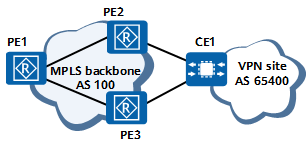

Before configuring VPN FRR, you have completed the following tasks:
Configure a routing protocol on the devices for them to communicate.
Ensure that two unequal-cost routes destined for the CE are available on the PE.
Create a VPN.
If a CE is dual-homed to two PEs, you can configure VPN FRR to ensure that if the primary link between PEs fails, VPN services are switched to the backup link.
VPN FRR applies to services that are very sensitive to packet loss and delay on a VPN. On the network shown in Configuring VPN FRR, CE1 is dual-homed to PE2 and PE3, and VPN FRR is configured on PE1. When the link between PE1 and PE2 fails, VPN traffic needs to be fast switched to the link between PE1 and PE3.
Two methods for configuring VPN FRR are available:
